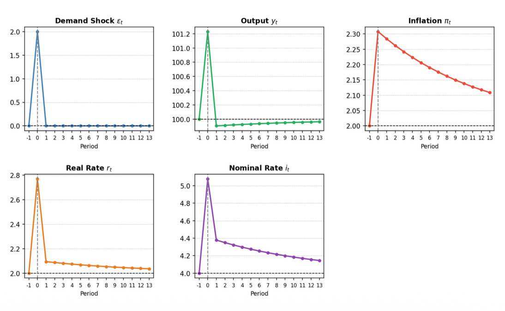
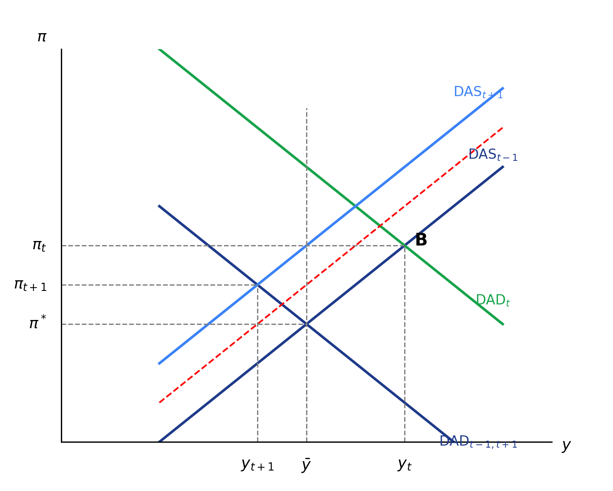

Seminar 4: Shock Analysis (continued)
Expectations & Demand Shocks — Mathematical impact of anchors and shifts.
Partially Anchored Expectations
Assume that inflation expectations follow: $$\pi_t^e - \pi^* = \psi(\pi_{t-1} - \pi^*), \quad 0 < \psi < 1$$
- Modify the DAS curve to incorporate this expectations mechanism.
- For a one-period supply shock $\nu_0 = 1$ with $\psi = 0.7$, calculate the path of inflation for periods 0, 1, and 2.
- Compare with fully adaptive expectations ($\psi = 1$). How much faster does inflation return to target?
Show Solution
First, a reminder about the interpretation of $\psi$:
- If $\psi=1$: Fully adaptive expectations. Expected inflation fully follows last period's inflation: $\pi_t^e = \pi_{t-1}$.
- If $\psi=0$: Fully anchored expectations. Expected inflation is always equal to the target: $\pi_t^e = \pi^*$.
- If $0 < \psi < 1$: Partially anchored expectations. Expected inflation depends partly on last period's inflation gap and partly on the target.
Rewrite the expectations equation:
Define the inflation gap as $\tilde{\pi}_t = \pi_t - \pi^*$. Then expected inflation is:
Substitute this into the Phillips curve / DAS relation:
Subtracting $\pi^*$ from both sides, we get the modified DAS:
Interpretation
Persistence is inherited from $\psi$. When $0 < \psi < 1$, inflation is still persistent, but less than under full adaptive expectations.
Parameters: $\psi = 0.7$, $\phi = 0.25$, $\bar{y} = 100$, $\pi^* = 2$.
Initial state: $\tilde{\pi}_{-1} = 0$. One-period shock: $\nu_0 = 1$.
Period $t=0$ (The Shock Hits)
DAS: $\tilde{\pi}_0 = 0.7(0) + 0.25(y_0 - 100) + 1 \implies \tilde{\pi}_0 = 0.25(y_0 - 100) + 1$
DAD: $y_0 - 100 = -\frac{1}{3}\tilde{\pi}_0$
Substitute DAD into DAS: $\tilde{\pi}_0 = 0.25(-\frac{1}{3}\tilde{\pi}_0) + 1 \implies \frac{13}{12}\tilde{\pi}_0 = 1$
Period $t=1$ (Persistence remains)
$\nu_1 = 0$, $\psi \tilde{\pi}_0 = 0.7 \cdot \frac{12}{13} = \frac{42}{65}$
DAS: $\tilde{\pi}_1 = \frac{42}{65} - \frac{1}{12}\tilde{\pi}_1 \implies \frac{13}{12}\tilde{\pi}_1 = \frac{42}{65}$
Period $t=2$ (Convergence)
$\psi \tilde{\pi}_1 = 0.7 \cdot \frac{504}{845} = \frac{3528}{8450}$
DAS: $\tilde{\pi}_2 = \frac{3528}{8450} \cdot \frac{12}{13} = \frac{42336}{109850} \approx 0.385$
To compare, we take $\psi = 1$. The DAS equation becomes:
Period $t=0$
Since $\tilde{\pi}_{-1}=0$, $\tilde{\pi}_0 = 0.25(y_0 - 100) + 1$. Combined with DAD ($y_0 - 100 = -\frac{1}{3}\tilde{\pi}_0$):
Note: At $t=0$, the result is exactly the same as for $\psi=0.7$ because the lagged term $\psi \tilde{\pi}_{t-1}$ is zero.
Period $t=1$ ($\nu_1 = 0$)
DAS: $\tilde{\pi}_1 = 1 \cdot \frac{12}{13} + 0.25(y_1 - 100) \implies \tilde{\pi}_1 = \frac{12}{13} - \frac{1}{12}\tilde{\pi}_1$
Period $t=2$ ($\nu_2 = 0$)
DAS: $\tilde{\pi}_2 = \frac{144}{169} - \frac{1}{12}\tilde{\pi}_2 \implies \frac{13}{12}\tilde{\pi}_2 = \frac{144}{169}$
Speed of Return
With $\psi = 0.7$ (partially anchored): $\tilde{\pi}_1 \approx 0.596, \; \tilde{\pi}_2 \approx 0.385$.
With $\psi = 1$ (fully adaptive): $\tilde{\pi}_1 \approx 0.852, \; \tilde{\pi}_2 \approx 0.786$.
Conclusion: With $\psi = 0.7$, inflation is less persistent, so it returns to target much faster than under fully adaptive expectations ($\psi = 1$).

Visualizing the difference in convergence speed: anchored expectations act as a "stabilizing magnet".
Fully Anchored Expectations
Recall — Expectations Mechanisms
- $\psi = 1$ (Fully Adaptive): $\pi_t^e = \pi_{t-1}$. Expected inflation fully follows last period's inflation — no anchoring.
- $\psi = 0$ (Fully Anchored): $\pi_t^e = \pi^*$. People always expect inflation to be equal to the target, regardless of past inflation.
Assume expectations are fully anchored: $\psi = 0 \implies \pi_t^e = \pi^*$.
Parameters: $\phi = 0.25$, $\bar{y} = 100$, $\pi^* = 2$. One-period supply shock: $\nu_0 = 1$ at $t=0$.
- Modify the DAS curve accordingly.
- What happens to inflation following a one-period supply shock?
- Does the central bank need to create a recession to stabilise inflation?
- Is the Taylor principle ($\theta_\pi > 0$) still necessary for stability?
- How does this relate to post-pandemic inflation dynamics in Czechia?
Show Solution
Start from the standard DAS (Phillips curve):
With fully anchored expectations, $\psi = 0 \implies \pi_t^e = \pi^*$ for all $t$. Substituting:
Inflation no longer depends on past inflation. There is no intrinsic persistence — it is driven only by the current output gap and supply shocks.
Parameters: $\phi = 0.25$, $\bar{y} = 100$, $\pi^* = 2$. One-period shock: $\nu_0 = 1$ at $t=0$, and $\nu_t = 0$ for $t \geq 1$.
Period $t=0$ (The Shock Hits)
DAS: $\pi_0 = \pi^* + 0.25(y_0 - 100) + \nu_0 = 2 + 0.25(y_0 - 100) + 1$
DAD: $y_0 = 100 - \frac{1}{3}(\pi_0 - \pi^*) = 100 - \frac{1}{3}(\pi_0 - 2)$
So: $y_0 - 100 = -\frac{1}{3}(\pi_0 - 2)$
Substitute DAD into DAS:
$\pi_0 = 3 + 0.25 \cdot \left(-\frac{1}{3}(\pi_0 - 2)\right) = 3 - \frac{1}{12}(\pi_0 - 2)$
$\pi_0 - 3 = -\frac{1}{12}(\pi_0 - 2) \implies 12(\pi_0 - 3) = -(\pi_0 - 2)$
$12\pi_0 - 36 = -\pi_0 + 2 \implies 13\pi_0 = 38$
Then: $y_0 = 100 - \frac{1}{3}\left(\frac{38}{13} - 2\right) = 100 - \frac{1}{3} \cdot \frac{12}{13} = 100 - \frac{4}{13} \approx 99.692$
Period $t=1$ (Shock Gone)
$\nu_1 = 0$. With fully anchored expectations: $\pi_1^e = \pi^* = 2$.
DAS: $\pi_1 = 2 + 0.25(y_1 - 100) + 0 = 2 + 0.25(y_1 - 100)$
DAD: $y_1 - 100 = -\frac{1}{3}(\pi_1 - 2)$
Substitute:
$\pi_1 = 2 + 0.25 \cdot \left(-\frac{1}{3}(\pi_1 - 2)\right) = 2 - \frac{1}{12}(\pi_1 - 2)$
$(\pi_1 - 2) = -\frac{1}{12}(\pi_1 - 2) \implies \frac{13}{12}(\pi_1 - 2) = 0$
This holds for all $t \geq 1$: $\pi_t = \pi^* = 2$.
Key Insight
Inflation returns to target immediately after the shock disappears. Because $\pi_t^e = \pi^*$ always, expected inflation acts as a self-fulfilling anchor — there is no expectation-driven persistence.
From the calculation in Q2, at $t=1$:
Output returns to its natural level automatically. The central bank does not need to create a recession (i.e., no negative output gap is needed) to bring inflation back to target.
This is the key advantage of fully anchored expectations: the economy self-corrects because there is no expectations-driven spiral to break.
Recall the Taylor Rule:
The Taylor Principle ($\theta_\pi > 0$) is required so that the CB raises the real interest rate when inflation rises. Without it, the DAD curve becomes upward-sloping, creating an explosive spiral.
Let's test what happens if the Taylor Principle is violated (e.g., $\theta_\pi = -0.5 < 0$), keeping $\alpha = 1$, $\theta_y = 0.5$.
1. Use the correct slope based on the model:
2. Substitute and Compute:
3. Conclude:
- The slope is positive.
- Therefore, the DAD curve is upward-sloping.
Economic Implication
This confirms instability when $\theta_\pi < 0$. Because the DAD is upward-sloping, higher inflation implies higher output (due to the real interest rate falling), fueling an explosive spiral.
The Taylor principle is violated, and the system loses its structural stability.

Figure: An upward-sloping DAD curve resulting from a violation of the Taylor Principle ($\theta_\pi < 0$). A demand shock pushes DAD right, triggering an unstable spiral of rising output and rising inflation.
After the COVID-19 supply shocks of 2021–2022, Czechia experienced a sharp inflation surge. However, the Czech National Bank did not raise interest rates enough to fully match the Taylor Principle.
Despite this, inflation eventually returned toward target. The key reason: expectations were partially anchored ($0 < \psi < 1$). The public still broadly believed in the CB's long-run commitment to price stability, which limited the expectations-driven persistence.
Link to the Model
This episode illustrates why anchored expectations are so valuable: even if the CB under-reacts (violating the Taylor Principle), a sufficient degree of anchoring limits inflation persistence and allows the economy to return to target without a deep recession.
The risk is that sustained under-reaction erodes credibility and causes $\psi$ to drift toward 1 — at which point the Taylor Principle once again becomes critical for stability.
One-period Demand Shock
The economy starts in long-run equilibrium. A positive demand shock $\epsilon_0 = 2$ occurs in period 0 only ($\epsilon_t = 0$ for $t \geq 1$). Assume adaptive expectations: $\pi_{t+1}^e = \pi_t$.
- Determine the impact on $y_0, \pi_0, r_0$, and $i_0$ in period 0.
- Why does output increase by less than the shock?
- Explain the mechanism through which the demand shock leads to higher inflation.
- Show the impact graphically in the DAD-DAS diagram.
Show Solution
Parameters: $\phi = 0.25$, $\bar{y} = 100$, $\pi^* = 2$, $\pi_0^e = \pi^* = 2$ (economy starts in equilibrium). Shock: $\epsilon_0 = 2$.
With the demand shift, the DAD becomes:
Using the DAD shift from $\epsilon_0 = 2$ (simplified, with equal treatment as IS shift): DAD shifts right by the multiplied shock. Combined with DAS:
The demand shock shifts DAD rightward → the new intersection with the upward-sloping DAS is at higher output and higher inflation. The CB reacts by raising nominal and real rates via the Taylor Rule.

Figure — Time paths after a one-period demand shock.
Follow the causal chain step by step:
Conclusion
The demand shock increases output, but the resulting inflation triggers the CB's Taylor Rule. The CB raises $i_t$ by more than $\pi_t$ (Taylor Principle), which raises the real rate $r_t$, which dampens the IS — crowding out part of the initial demand boost. Output goes up, but less than 2.
$\epsilon_0 \uparrow$ (demand shock) $\implies y_0 > \bar{y}$ (positive output gap) $\implies$ upward pressure on prices via the DAS/Phillips curve $\implies \pi_0 > \pi^*$.
More precisely: DAS gives $\pi_0 = \pi_0^e + \phi(y_0 - \bar{y})$. Since $\pi_0^e = \pi^*$ (we start from equilibrium) and $y_0 > \bar{y}$, we get $\pi_0 > \pi^*$. The larger the output gap, the larger the inflation increase.
The diagram below illustrates the dynamics of the positive demand shock, shifting the economy from the initial equilibrium $E_{-1}$ to $E_0$, and the subsequent adjustment to $E_{t+1}$:

DAD-DAS Diagram: One-Period Positive Demand Shock Dynamics
Demand Shock — The Multi-Period Dynamics
Continue from Exercise 3. The shock $\epsilon_0 = 2$ has passed ($\epsilon_t = 0$ for $t \geq 1$). Assume adaptive expectations: $\pi_{t+1}^e = \pi_t$.
- What happens to output in period 1? Why does it fall below potential?
- Explain why inflation remains above target in period 1 despite output returning to potential.
- Trace the path of all variables for periods 1, 2, and 3.
- Why must the central bank maintain restrictive policy (high real rates) even after output returns to normal?
- Sketch the complete time paths through convergence.
Show Solution
At $t=1$, the demand shock is gone ($\epsilon_1 = 0$). But from equation 5: $\pi_1^e = \pi_0 > \pi^*$.
DAS: $\pi_1 = \pi_1^e + \phi(y_1 - \bar{y}) = \pi_0 + \phi(y_1 - \bar{y})$
The DAS has shifted up because expectations carried over the high inflation from period 0. The DAD, meanwhile, is back to its standard position (no shock), written as:
Since $\pi_1^e = \pi_0 > \pi^*$, the DAS starts above normal, causing the intersection with DAD to be at $y_1 < \bar{y}$: a recession. The CB's reaction to high inflation (high $i_1$) makes real rates stay elevated, depressing IS.
From equation 5: $\pi_1^e = \pi_0 > \pi^*$. The DAS in period 1 is:
The DAS gives $\pi_1 = \pi_0 + \phi(y_1 - \bar{y})$. The term $\phi(y_1 - \bar{y}) < 0$ (negative output gap) does push inflation down from $\pi_0$ — but not enough to bring it back to $\pi^*$, because $\pi_0 > \pi^*$ was large. Inflation falls, but stays above target.
This is the key: adaptive expectations mean DAS starts at $\pi_0$, not at $\pi^*$. Each period, the negative output gap chips away a little at inflation, but the process is slow — it converges gradually, not immediately.
| Period | $y_t$ | $\pi_t$ | $r_t$ | $i_t$ |
|---|---|---|---|---|
| $t=0$ (shock) | $> \bar{y}$ ↑ | $> \pi^*$ ↑ | $> \rho$ ↑ | $↑↑$ strongly |
| $t=1$ | $< \bar{y}$ ↓ (recession) | $> \pi^*$ slightly lower | $> \rho$ still high | ↓ slowly |
| $t=2$ | recovering toward $\bar{y}$ | closer to $\pi^*$ | approaching $\rho$ | easing |
| $t=3$ | $\approx \bar{y}$ | $\approx \pi^*$ | $\approx \rho$ | $\approx \rho + \pi^*$ |
Even after output returns to $\bar{y}$, inflation is likely still above $\pi^*$ (because $\pi_t^e = \pi_{t-1} > \pi^*$). If the CB relaxes policy prematurely (cuts $i_t$), the real rate would fall, IS would expand, and $y_t > \bar{y}$ would push inflation back up rather than down.
The negative output gap must be maintained long enough that the cumulative downward pressure on $\pi_t$ (via $\phi(y_t - \bar{y}) < 0$) erodes the inflation expectation all the way back to $\pi^*$. Only then can the CB ease.
Key Point
The lag between output and inflation (driven by adaptive expectations) is precisely why demand shocks are costly: stabilizing inflation requires a sustained recession, not just a brief tightening.
See question 1 from previous exercise.
DAD-DAS illustration of the output undershoot followed by gradual convergence back to equilibrium.
End of Seminar 4 — Shock Analysis. Based on materials by Mgr. Ing. Tomáš Pokorný (IES UK).